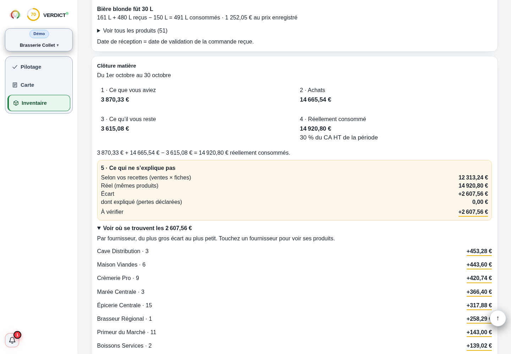

FAO · mesure des pertes alimentaires
Ressources de mesure et de prévention. Aucun montant d’économie garanti pour votre établissement.
Document consulté le 18 septembre 2026. Cette référence ne valide pas les données de votre établissement.Comprendre le sujet
Pesez les pertes par produit et par moment : préparation, invendus ou retours d’assiette.
Pesez les pertes par produit et par moment : préparation, invendus ou retours d’assiette. Valorisez-les avec un coût cohérent et rapportez-les à l’activité. Un total en euros décrit ce qui a été mesuré ; il ne devient pas une économie garantie. La première action dépend de l’endroit où la perte apparaît.
LES POINTS QUI CHANGENT LA LECTURE
Des repères à appliquer dans votre établissement. Le détail reste accessible, sans perdre le fil.
Notez le poids, le produit, la date et le motif observé. Distinguez les parties non comestibles des aliments qui auraient pu être consommés. Un kilo de parures et un kilo de portions invendues ne conduisent pas au même réglage.
Pour un plat composé, choisissez un coût correspondant au plat mesuré. Le prix d’une matière première n’évalue pas automatiquement une préparation entière. Ne comptez pas deux fois une perte déjà intégrée au rendement de la recette.
Suivez des kilogrammes par couvert et un montant de période. Une hausse du poids total pendant une forte hausse d’activité n’a pas le même sens qu’une dérive par portion servie.
Testez une quantité de mise en place, une présentation ou une taille de lot. Comparez ensuite ventes, ruptures et pertes. Réduire le stock sans regarder les ruptures peut déplacer le problème.
La recherche d’une réduction du gaspillage ne modifie pas les règles de manipulation ni les durées de conservation applicables. La FAO documente la mesure et la prévention ; l’OMS rappelle les principes de sécurité alimentaire.
LE LABORATOIRE
Modifiez les données, observez le résultat, puis vérifiez ce que le calcul permet de conclure.
UN SCÉNARIO, JUSQU’AU BOUT
Le calcul, jusqu’au bout
Le constat est de 108 €, soit 30 grammes par couvert dans ce périmètre. Il faut encore établir la part réellement évitable.
Exemple fictif · hypothèses modifiables
| Coût valorisé | 108 € |
|---|---|
| Poids par couvert pour 600 couverts | 0,03 kg |
Les montants sont arrondis pour la lecture.
Les calculs gardent leur précision.
Présentez-le comme une perte valorisée. Une réduction peut engager du temps ou d’autres coûts, et toute la quantité n’est pas forcément évitable.
Non. Des catégories séparées rendent l’action possible : préparation, invendus et retours ne se corrigent pas de la même façon.
Ressources de mesure et de prévention. Aucun montant d’économie garanti pour votre établissement.
Document consulté le 18 septembre 2026. Cette référence ne valide pas les données de votre établissement.Principes de manipulation sûre ; ne remplace pas vos procédures et obligations locales.
Document consulté le 18 septembre 2026. Cette référence ne valide pas les données de votre établissement.Mesurez pendant des services comparables un produit et un motif précis avant de changer la production.
DANS L’APPLICATION VERDICT

Capture réelle de Verdict — démonstration fictive Brasserie Collet. Clôture matière : réel et théorique.
Voir l’écran en grandClôture matière
Réellement consommé
Selon vos recettes (ventes × fiches)
Les écarts de cette démonstration ne prouvent pas un gaspillage ; les pertes doivent être déclarées et rapprochées.
LES CHIFFRES NE VIVENT PAS SÉPARÉMENT.
Ventes, carte, inventaire : découvrez la lecture proposée par Verdict, avec vos données et vos hypothèses.